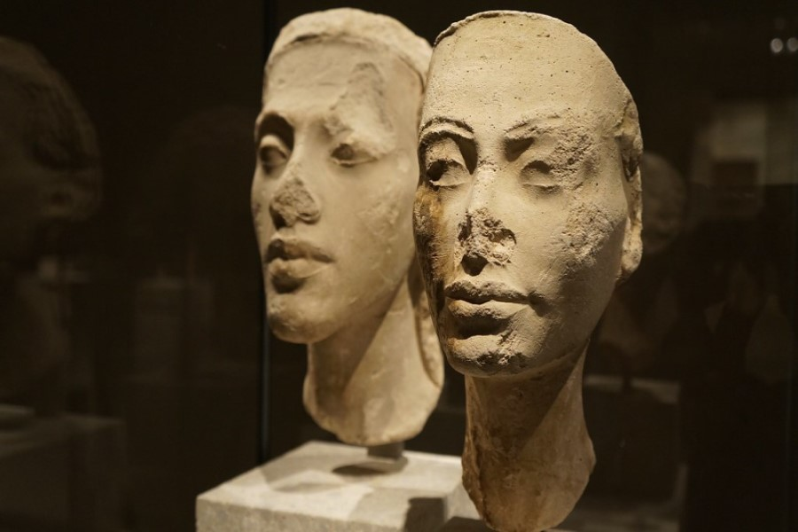

A Mais Bela Chegou
Nefertite, Rainha do Kemet (Terra Preta), Egito/Norte da Àfrica, durante o período de 1352-1334 AEC. Mudou seu nome para Nefernefruaten, que se traduz como: Perfeito da Perfeição de Aton. O Aton sendo o disco solar divino, que era adorado pelo casal real.
Reinado Além do Tempo
Nefertiti era a Grande Esposa Real de Akhenaton.Em seus retratos iniciais, Nefertiti adotou as mesmas características de seu marido, mas pode ser distinguida dele por usar duas cobras na testa (um urano duplo) em vez de uma. Este tipo de retrato é melhor ilustrado pelas estátuas colossais de Karnak
Quem é a Rainha Nefertite
O famoso retrato de Nefertiti retrata uma mulher mais madura, usando uma coroa incomum que se tornou sinônimo dela e que se encontra em outras representações da esposa real. Ele foi encontrado na oficina de um artista chamado Thutmose na cidade real de Akhetaton. Esta cidade foi a capital de Kemet durante o reinado de Akhenaton, mas mais tarde foi abandonada pelo rei Tutancâmon 
Você notará a cabeça alongada, que era característica das primeiras representações reais durante este período. Uma comparação natural com a prática de enfaixar a cabeça entre, por exemplo, o povo Mangbetu é freqüentemente feita. No entanto, recomendo cautela porque não podemos mostrar um continuum direto de uma cultura para a outra. O que podemos deduzir é que esse recurso era importante o suficiente para ser incluído nas primeiras representações da família real Kemita..
Autora
 Jaqueline de Almeida.
Comunicóloga. Estudando Front-End.
Linkedin
Jaqueline de Almeida.
Comunicóloga. Estudando Front-End.
Linkedin